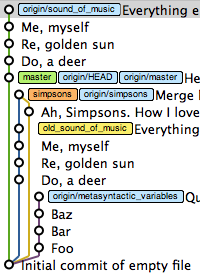
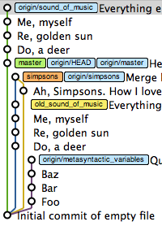

Research
Software development is no longer an isolated process. Instead, globalization and new technologies have made distributed development the norm now, where developers contribute their work to compose larger and more complex projects. However, the distributed process has also brought new challenges to developers. My research revolves around these challenges: which are they, how do they affect developers, how are they dealing with these challenges currently, and what do they need to help them resolve these challenges. Two of said issues are task assignment and conflict resolution, and I believe addressing them is important, as developers face them frequently and so far they are unavoidable.
Task assignment is the decision matching developers and tasks. Expert recommendation currently focuses on suggesting the best developer for a particular issue (i.e. task to developer); however, in open source projects contributors are the ones searching for tasks (i.e. developer to task). Obtaining the required skills and difficulty of a task can help developers find tasks that are appropriate to their abilities, motivations, experience, and dedication.
Similarly, once developers are contributing their code they can collide with other developers that change common artifacts with them. These collisions can be literal (merge conflicts) or semantical (build/test failures), and their resolution is non-trivial and time consuming. Conflicts are easier to solve the earlier they are found, but interrupting work for every potential conflict can considerable disrupt a developer's workflow. Gathering more details of the type and characteristics of the conflict can give developers a better overall view of the conflicts to help them decide when to interrupt their work to solve them or when it might be better to finish their current task before attempting to resolve the conflict.
 
